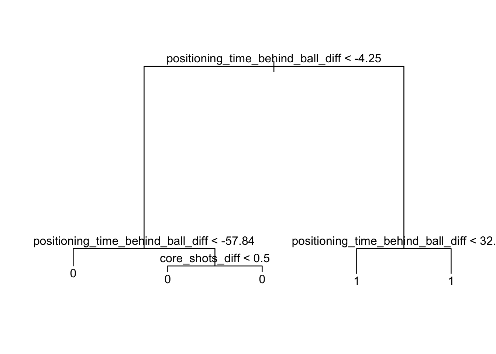

── Column specification ────────────────────────────────────────────────────────
Delimiter: ","
chr (1): series_id
dbl (135): ball_possession_time_diff, ball_time_in_side_diff, core_shots_dif...
ℹ Use `spec()` to retrieve the full column specification for this data.
ℹ Specify the column types or set `show_col_types = FALSE` to quiet this message.
Build Random Forest Model:
set.seed(993)RL_splits <-group_initial_split(RL_numeric, group = series_id, prop =0.5)RL_train <-training(RL_splits)RL_test <-testing(RL_splits)RL_resamples <-group_vfold_cv(RL_train, v =5, group = series_id)RL_train_tree <-tree(winner_factor ~ . - series_id, data = RL_train)plot(RL_train_tree)text(RL_train_tree)

Get predictions and calculate model classification accuracy:
predictions <-predict(RL_train_tree, newdata = RL_test)# if more than 50% likely predictions <-if_else(predictions >0.5, true =TRUE, false =FALSE)accuracy <-mean(predictions == RL_test$winner_factor)accuracy
[1] 0.9553776
The Random Forest model predicted game outcome with 95.537% accuracy.
Cleaner visual of the random forest tree output:
library(rpart)
Attaching package: 'rpart'
The following object is masked from 'package:dials':
prune
library(rpart.plot)clean_tree <-rpart(winner_factor ~ . - series_id, data = RL_train)clean_tree